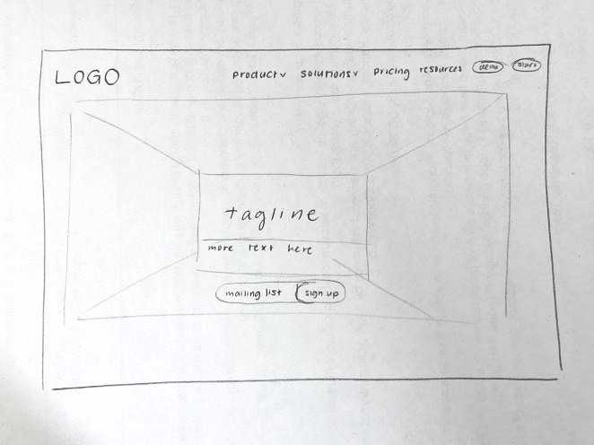
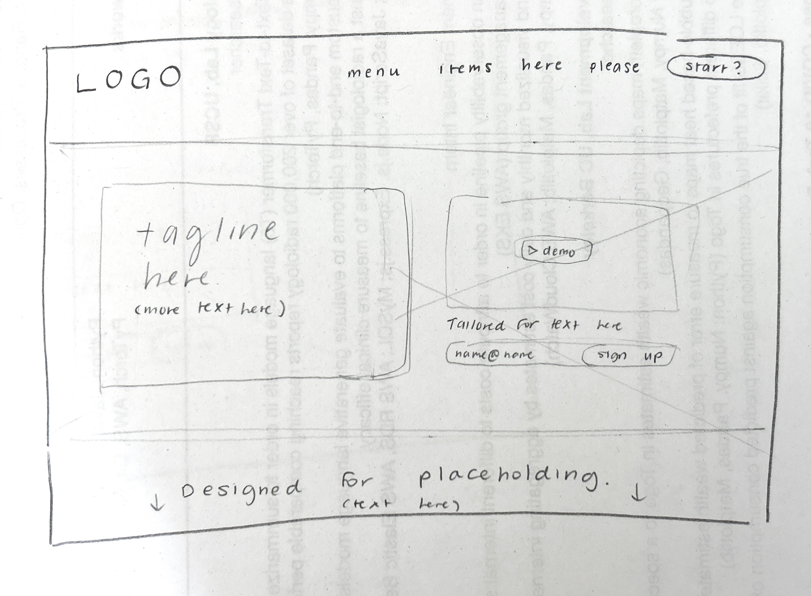

-
Using the favorite website you chose in homework 1, create a wireframe for one page of it using pen/paper, PowerPoint, or any your tool of choice. (use the 'img' tag!) Make sure to let us know what the name of your website is (Use the 'p' tag!)
 -
Try to improve the website you've chosen, and create a redesigned wireframe of one page for the same website using the principles of visual hierarchy that you learned from the article.

-
What is the goal of the website? Who is it intended for? How does the design accomplish this? Write 2-3 sentences answering these questions. (Use the 'p' tag again!)
This website is intended to market to potential clients, largely professionals who need a collaborative knowledge base for their teams. Their website's design achieves this by immediately promoting their product, what it is, and ways to try it and sign up on its homepage.
-
Write 2-3 sentences about what problems your redesign addressed, and how it solved them.
The background graphic they use on their homepage is distracting and draws the eye away from the tagline text, which is what we want potential clients to see. Additionally, the demo video was out of sight and placed below the sign-up box: I moved it to be above the sign-up box so that it can pique viewers' interest, encouraging clients to sign up for the product because they know what they're signing up for.
NOTE: Make sure to include the wireframe images in the website and don't just put it in your assets folder!
Your wireframes should look something like this: